Group objects in animae are precisely the loop animae of connected pointed animae. This is the content of the following recognition principle:
Theorem 5.2.1 (Recognition principle for loop spaces, cf. Stasheff (1963), May (1972), Boardman and Vogt (1973), Lurie (2009), Theorem 7.2.2.11). Let \(M\) be a monoid in \(\An \) and let \(X\) be a pointed anima.
- (1)
-
The unit map \(M \to \bOmega \bB M\) is an isomorphism if and only if \(M\) is a group in \(\An \);
- (2)
-
The pointed anima \(\bB M\) is connected;
- (3)
-
The counit \(\bB \bOmega X \to X\) is an inclusion of the connected component of the basepoint of \(X\).
The classical formulation of this result is in terms of the operadic language of \(A_{\infty }\)-spaces or \(E_1\)-spaces: it says that any grouplike \(E_1\)-space is equivalent to a loop space. The \(\infty \)-categorical formulation in terms of the adjunction \(\bB \dashv \bOmega \) has the advantage that it immediately provides us with an equivalence of \(\infty \)-categories:
Corollary 5.2.2. The adjunction \(\bB \dashv \bOmega \) restricts to an equivalence of \(\infty \)-categories
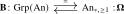
between group objects in \(\An \) and connected pointed animae.
Proof. The adjunction from Proposition 5.1.15 restricts to groups and pointed connected animae since \(\bOmega (X)\) is always a group and \(\bB M\) is always connected. The unit \(M \to \bOmega \bB M\) is always an isomorphism by part (1) of the theorem, while the counit \(\bB \bOmega X \to X\) is always an isomorphism by part (3) of the theorem. This shows that the two functors are in fact inverse to one another. □
5.2.1 Proof of the recognition principle
The proof of Theorem 5.2.1 will occupy the remainder of this section; a reader willing to take the theorem on faith may safely continue with Section 5.3. Let us first explain the two main ingredients of the proof. To identify a grouplike monoid \(M\) with \(\bOmega \bB M\), we must compute the pullback square defining the loop anima of \(\bB M\) and identify it with the underlying anima of \(M\). We will obtain this from a descent property of the \(\infty \)-category \(\An \), by comparing the simplicial object \(M\) with its décalage \(PM\), obtained by shifting every simplicial degree up by one. The shifted object admits extra degeneracies, which force its geometric realization to be contractible, while grouplikeness of \(M\) ensures that the comparison map \(PM \to M\) is cartesian. Descent then turns this levelwise statement into the desired pullback square after geometric realization.
Extra degeneracies
We record a useful technique for computing geometric realizations.
Definition 5.2.3 (Extra degeneracies). We define the subcategory \(\simp ^{\deg } \subseteq \simp \) as the subcategory consisting of all objects \([n]\), but with only those morphisms \(\phi \colon [n] \to [m]\) satisfying \(\phi (n) = m\). An augmented simplicial object with extra degeneracies in an \(\infty \)-category \(C\) is a functor \(Y\colon (\simp ^{\deg })\catop \to C\).
There exists a functor \((+1)\colon \simp _+ \hookrightarrow \simp ^{\deg }\) given on objects by \([n] \mapsto [n+1]\), and on morphisms by sending \(\phi \colon [n] \to [m]\) to the map \[ [n+1] \to [m+1], \qquad i \mapsto \begin {cases} \phi (i) & 0 \leq i \leq n \\ m+1 & i = n+1. \end {cases} \] Given an augmented simplicial object with extra degeneracies \(Y\colon (\simp ^{\deg })\catop \to C\), precomposition with \((+1)\) yields the underlying augmented simplicial object of \(Y\). Conversely, we say that an augmented simplicial object \(X\colon \simp _+\catop \to C\) admits extra degeneracies if there exists an augmented simplicial object with extra degeneracies \(Y\) such that \(X\) is isomorphic to the underlying augmented simplicial object of \(Y\).
To understand the structure of \(\simp ^{\deg }\), note that all the face maps that are allowed in \(\simp ^{\deg }\) are actually already in the image of the functor \((+1)\colon \simp _+ \hookrightarrow \simp ^{\deg }\). Among the degeneracy maps, the map \(s_n\colon [n+1] \to [n]\) in \(\simp ^{\deg }\) is the only one which does not lie in this image. Hence an augmented simplicial object with extra degeneracies can be pictured as follows, with non-dashed arrows encoding the underlying augmented simplicial object and with dashed arrows encoding the ‘extra degeneracies’:
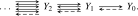
The utility of extra degeneracies lies in the following easy computation of geometric realizations:
Lemma 5.2.4 (Extra degeneracy argument). Let \(X\colon \simp _+\catop \to C\) be an augmented simplicial object that admits extra degeneracies. Then \(X\) is a colimit diagram, in the sense that the corresponding cocone \(X\vert _{\simp \catop } \Rightarrow \const _{X_{-1}}\) is a colimit cocone: \[ \colim _{[n] \in \simp \catop } X_n \iso X_{-1}. \]
Proof. By assumption, there exists an augmented simplicial object with extra degeneracies \(Y\colon (\simp ^{\deg })\catop \to C\) such that \(X_n = Y_{n+1}\). We need to show that the preferred map from \(\colim _{[n] \in \simp \catop } X_n\) to \(X_{-1}\) induced by the cocone is an isomorphism.
Observe that the inclusion functor \((+1)\colon \simp \hookrightarrow \simp ^{\deg }\) admits a right adjoint given by the inclusion \(\simp ^{\deg } \hookrightarrow \simp \): for natural numbers \(n,m \geq 0\), providing a map \(\phi \colon [n] \to [m]\) of partially ordered sets is the same as providing a map \(\overline {\phi }\colon [n+1] \to [m]\) of posets satisfying the condition that \(\overline {\phi }(n+1) = m\). It follows from Corollary 21.5.7 that the functor \((+1)\colon \simp \hookrightarrow \simp ^{\deg }\) is an initial functor, and hence its opposite \((+1)\catop \colon \simp \catop \hookrightarrow (\simp ^{\deg })\catop \) is a final functor. By Theorem 21.5.1, this means that the geometric realization of \(X\) may be computed as \[ \colim _{[n] \in \simp \catop } X_n = \colim _{[n] \in \simp \catop } Y_{n+1} \simeq \colim _{[m] \in (\simp ^{\deg })\catop } Y_m. \] But since \(\simp ^{\deg }\) has an initial object given by \([0]\), \((\simp ^{\deg })\catop \) has a terminal object, and so it follows from Lemma 21.2.4 that \(\colim _{[m] \in (\simp ^{\deg })\catop } Y_m\) is isomorphic to \(Y_0 = X_{-1}\) as desired. □
Descent
The \(\infty \)-category \(\An \) has a special feature that distinguishes it from other \(\infty \)-categories: it satisfies descent. In the following statement, we use the notation \(I^{\triangleright } := (I \times [1]) \times _{I \times \{1\}} *\) from Definition 1.7.5.
Theorem 5.2.5 (Descent for colimits). Let \(I\) be a small \(\infty \)-category, let \(\overline {F}, \overline {G} \colon I^{\triangleright } \to \An \) be functors and let \(\overline {\alpha }\colon \overline {F} \Rightarrow \overline {G}\) be a natural transformation such that the restriction \(\alpha := \overline {\alpha }\vert _I \colon F \Rightarrow G\) is a cartesian transformation, in the sense that for every morphism \(i \to j\) in \(I\) the commutative square
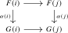
is a pullback square. Assume that \(\overline {G}\) is a colimit diagram. Then \(\overline {F}\) is a colimit
diagram if and only if \(\overline {\alpha }\) is a cartesian transformation, i.e. also all the squares \begin {equation*} 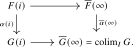
Proof. See Section 23.7; see also [Lurie (2009), Theorem 6.1.3.9]. □
The theorem has two complementary uses. If both \(\overline F\) and \(\overline G\) are colimit diagrams and \(\alpha \) is cartesian, then every \(F(i)\) can be recovered by pulling back the map \(\colim _I F\to \colim _I G\) along \(G(i)\to \colim _I G\). Conversely, if only \(\overline G\) is known to be a colimit diagram, cartesianness of the extended transformation \(\overline \alpha \) forces \(\overline F\) to be a colimit diagram as well. This second form is the one we will use below. See Section 23.7 for the conceptual interpretation in terms of slice categories.
Example 5.2.6 (Universality of coproducts). Consider \(I = * \sqcup *\), so that \(I^{\triangleright } \simeq \,\,\pullback \). The transformation \(\overline {\alpha }\) will thus be a diagram of the form
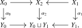
where in the bottom we get a coproduct, reflecting the condition that \(\overline {G}\) is a colimit diagram. The theorem then expresses that the following two conditions are equivalent:
- The two squares in the diagram are both pullback squares;
- The functor \(X_0 \sqcup X_1 \to X_2\) is an isomorphism.
The fact that these two conditions are equivalent is precisely an instance of the universality of coproducts from Axiom C.3, with the two parts of the axiom corresponding to the two implications.
The décalage argument
We are now ready to prove the recognition principle.
Proof of Theorem 5.2.1. We start with (2): the fact that \(\bB M\) is connected for any monoid object \(M\) in \(\An \). By definition, \(\bB M\) is connected if and only if its set of path components \(\pi _0(\bB M)\) is a single point. Since \(\pi _0\colon \An \to \Set \) is a left adjoint, it preserves colimits (see Lemma 21.2.6), and thus \(\pi _0(\bB M)\) is a colimit in sets of the following simplicial diagram:
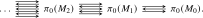
The colimit of a simplicial object in sets is the coequalizer of its two face maps in degrees \(1\) and \(0\). Hence the canonical map \(\pi _0(M_0) \to \colim _{[n]} \pi _0(M_n)\) is surjective. Since \(M_0 \cong *\), it follows that \(\pi _0(\bB M)\) has a single element.
Let us assume (1) for a moment and use it to deduce (3), the fact that the counit \(\epsilon _X\colon \bB \bOmega X \to X\) is the inclusion of the path component \(X_0\) of the basepoint of \(X\). Since \(\bB \bOmega X\) is connected, the counit map certainly lands in \(X_0\) and we need to show that the resulting map \(\bB \bOmega X \to X_0\) is an isomorphism of animae. Since both sides are connected pointed animae, it suffices by Corollary 2.4.23 to show that the map \(\bOmega (\epsilon _X)\colon \bOmega (\bB \bOmega X) \to \bOmega (X_0) \simeq \bOmega (X)\) is an isomorphism. By the triangle identities for the adjunction, there is a commutative triangle of the form
and so \(\bOmega (\epsilon _X)\) is an isomorphism if and only if \(\eta _{\bOmega }\colon \bOmega X \to \bOmega (\bB \bOmega X)\) is an isomorphism. But since \(\bOmega X\) is a group object, this is an instance of part (1).
It remains to prove part (1), i.e. that \(M\) is a group if and only if the map \(\eta _M\colon M \to \bOmega \bB M\) is an isomorphism of monoids. One direction is clear: \(\bOmega \bB M\) is a group, so if this map is an isomorphism then also \(M\) is a group. For the other direction, assume that \(M\) is a group. To show that \(\eta _M\colon M \to \bOmega \bB M\) is an isomorphism, it suffices to show that the map \((\eta _M)_1\colon M_1 \to (\bOmega \bB M)_1 = \Omega \bB M\) on underlying animae is an isomorphism: since \(M_n \simeq M_1^{\times n}\) and \((\bOmega \bB M)_n \simeq ((\bOmega \bB M)_1)^{\times n}\) we then get that it is an isomorphism at every level. The map \(M_1 \to \Omega \bB M\) is induced by the commutative square
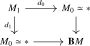
and so is an isomorphism if and only if this is a pullback square of animae. We will deduce this as an instance of Theorem 5.2.5. To this end, consider the diagram \(\overline {M}\colon (\simp _+)\catop \to \An \) that extends \(M\) with its colimit \(\overline {M}_{-1} := \bB M = \colim _{[n] \in \simp \catop } M_n\). Also consider the functor \[ \overline {PM}\colon (\simp _+)\catop \to \An , \qquad [n] \mapsto \overline {M}_{n+1}, \] and consider the natural transformation \(\overline {\alpha }\colon \overline {PM} \to \overline {M}\) whose components are the maps \(d_{n+1}\colon M_{n+1} \to M_n\). Let us spell out why these maps assemble functorially. The successor functor \(P\colon \simp _+ \to \simp _+\), obtained by adjoining a new final element, admits a natural transformation \(\id \to P\) whose component at \([n]\) is the final coface \(d^{n+1}\colon [n] \to [n+1]\). Precomposition with \(\overline M\colon (\simp _+)\catop \to \An \) therefore gives \(\overline \alpha \colon P^*\overline M=\overline {PM}\to \overline M\); at \([-1]\) its component is the augmentation \(M_0\to \bB M\). This is the usual décalage construction. The successor functor is the composite \(\simp _+ \xrightarrow {(+1)} \simp ^{\deg } \hookrightarrow \simp _+\) from Definition 5.2.3. Thus \(\overline {PM}\) is the underlying augmented simplicial object of \(\overline M\vert _{(\simp ^{\deg })\catop }\) and admits extra degeneracies. It is therefore a colimit diagram by Lemma 5.2.4, so that \(\colim _{[n] \in \simp \catop } \overline {PM}_n \simeq \overline {PM}_{-1} = M_0\). The pullback square we wish to prove now takes the form
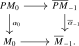
By Theorem 5.2.5, it thus remains to show that \(\alpha \) is a cartesian natural transformation. In other words, we need to show that for every morphism \(\phi \colon [n] \to [m]\) the square
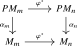
is a pullback square. We will prove this claim in increasingly general cases:
Step 1: We start with the case of the map \(\phi = d^1 \colon [0] \to [1]\). In this case, the square (5.3) reduces to the following:
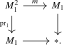
This square is a pullback square if and only if the shear map \((\pr _1,m)\colon M_1 \times M_1 \to M_1 \times M_1\) is an isomorphism, which holds by assumption since \(M\) is a group.
Step 2: We will now prove the claim for \(\phi = d^i\colon [n] \to [n+1]\), where \(n \geq 0\) and \(0 \leq i \leq n+1\). We use the identifications \(M_k \cong M_1^k\) coming from the Segal condition. For \(i=0\), the square (5.3) is the square which drops the first coordinate horizontally and the last coordinate vertically. It is a pullback because a pair of \((n+1)\)-tuples with the same middle \(n\) coordinates glues uniquely to an \((n+2)\)-tuple. For \(0<i<n+1\), the horizontal maps multiply the \(i\)-th and \((i+1)\)-st coordinates, while the vertical maps drop the last coordinate. Since the multiplication does not involve the last coordinate, this square is the product with \(M_1\) of a degenerate pullback square, and is therefore again a pullback.
It remains to consider the final coface \(i=n+1\). Here the multiplication involves the coordinate which is forgotten by the vertical maps, and the square takes the form
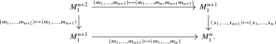
None of the maps affect the first \(n\) coordinates, and on the last two coordinates this is precisely the square (5.4). Hence it is the product of a degenerate pullback square with the pullback square from Step 1. This proves the claim for all coface maps \(d^i\).
Step 3: Next, assume that \(\phi \) is a codegeneracy map of the form \(s^i\colon [n+1] \to [n]\). Since \(s^i\) has a section of the form \(d^i\colon [n] \to [n+1]\), it follows from the pasting law of pullback squares that the square (5.3) is a pullback square:
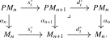
Step 4: We have now shown the claim when \(\phi \) is either a coface map \(d^i\) or a codegeneracy map \(s^i\). Since every map \(\phi \colon [n] \to [m]\) is an iterated composite of coface maps and codegeneracy maps, we then get the claim for general \(\phi \) by using the pasting law of pullback squares again. This finishes the proof of the theorem. □
Generated from the authoritative LaTeX source.